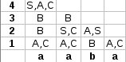

Revision history [back]
| | 1 | initial version | posted 2014-12-05 16:13:42 +0100 |
Mělo by to být snad takto:

Uděláš si čtvercovou tabulku o rozměrech délka řetězce + 1 a jedeš od spodu. Ty čísla vlevo značí délku řetězce. Takže když si vezmu řádek s č. 1 tak a vygeneruješ z Neterminálu A nebo C. To víš ze zadání. Obdobně b. Pak se díváš z čeho jdou vygenerovat řetězce délky 2. Nejdříve zjišťuješ z čeho vygenerovat "aa" prvni a se da vygenerovat z A nebo C druhe to ma samozrejme stejne hledas tedy jestli je v pravidlech AA nebo AC nebo CA nebo CC. CC se da vygenerovat z B a tak je tam napises do "bunky" na radku s cislem 2. Pote zjisťuješ jestli lze vygenerovat "ab" stejně jako předtím a hledáš tedy v pravidlech neterminály AB a CB. To stejne i pro retezec "ba". Pak jdeš o řádek výš a zjištuješ jestli jdou vygenerovat řetězce délky 3. Tedy "aab" a "aba". Ty se dají vygenerovat z řetězců délky 1 a 2 nebo 2 a 1. Díváš se tedy na 1. a druhý řádek. V prvním případě když zjišťuješ "aab". Tak se díváš na první sloupec na 2. řádku - ten generuje "aa" a na 3. sloupec na 1. řádku - ten generuje "b". Hledáš tedy BB v pravidlech. To tam není, ale pak ještě musíš hledat kombinace terminálu na 1.řádku 1.sloupci - ty generují "a" a na 2. ř. 2. s. ty generují "ab". Podobně pro řetězce délky 4. Hledáš kombinace neterminálu 3ř1s 1ř4s, 2ř1s 2ř 3s, 1ř1s 3ř2s. A pokud je v horním řádku S tak víš, že ten zadaný řetězec vegenerovat jde.
| | 2 | No.2 Revision |
Mělo by to být snad takto:
Uděláš si čtvercovou tabulku o rozměrech délka řetězce + 1 a jedeš od spodu. Ty čísla vlevo značí délku řetězce.
Takže když si vezmu řádek s č. 1 tak a vygeneruješ z Neterminálu A nebo C. To víš ze zadání. Obdobně b.
b.
Pak se díváš z čeho jdou vygenerovat řetězce délky 2. Nejdříve zjišťuješ z čeho vygenerovat "aa" prvni a se da lze vygenerovat z A nebo C druhe to ma samozrejme stejne hledas tedy jestli je v pravidlech AA nebo AC nebo CA nebo CC. CC se da vygenerovat z B a tak je tam napises do "bunky" na radku s cislem 2. Pote zjisťuješ jestli lze vygenerovat "ab" stejně jako předtím a hledáš tedy v pravidlech neterminály AB a CB. To stejne i pro retezec "ba".
"ba".
Pak jdeš o řádek výš a zjištuješ jestli jdou vygenerovat řetězce délky 3. Tedy "aab" a "aba". Ty se dají vygenerovat z řetězců délky 1 a 2 nebo 2 a 1. Díváš se tedy na 1. a druhý řádek. V prvním případě když zjišťuješ "aab". Tak se díváš na první sloupec na 2. řádku - ten generuje "aa" a na 3. sloupec na 1. řádku - ten generuje "b". Hledáš tedy BB v pravidlech. To tam není, ale pak ještě musíš hledat kombinace terminálu na 1.řádku 1.sloupci - ty generují "a" a na 2. ř. 2. s. ty generují "ab".
Podobně pro řetězce délky 4. Hledáš kombinace neterminálu 3ř1s 1ř4s, 2ř1s 2ř 3s, 1ř1s 3ř2s. A pokud je v horním řádku S tak víš, že ten zadaný řetězec vegenerovat jde.
| | 3 | No.3 Revision |
Mělo by to být snad takto:
Uděláš si čtvercovou tabulku o rozměrech délka řetězce + 1 a jedeš od spodu. Ty čísla vlevo značí délku řetězce.
Takže když si vezmu řádek s č. 1 tak a "a" vygeneruješ z Neterminálu A nebo C. To víš ze zadání. Obdobně b."b".
Pak se díváš z čeho jdou vygenerovat řetězce délky 2. Nejdříve zjišťuješ z čeho vygenerovat "aa" prvni a "a" lze vygenerovat z A nebo C druhe to ma samozrejme stejne stejně, hledas tedy jestli je v pravidlech AA nebo AC nebo CA nebo CC. CC se da vygenerovat z B a tak je tam napises do "bunky" na radku s cislem 2. Pote zjisťuješ jestli lze vygenerovat "ab" stejně jako předtím a hledáš tedy v pravidlech neterminály AB a CB. To stejne i pro retezec "ba".
Pak jdeš o řádek výš a zjištuješ jestli jdou vygenerovat řetězce délky 3. Tedy "aab" a "aba". Ty se dají vygenerovat z řetězců délky 1 a 2 nebo 2 a 1. Díváš se tedy na 1. a druhý řádek. V prvním případě když zjišťuješ "aab". Tak se díváš na první sloupec na 2. řádku - ten generuje "aa" a na 3. sloupec na 1. řádku - ten generuje "b". Hledáš tedy BB v pravidlech. To tam není, ale pak ještě musíš hledat kombinace terminálu na 1.řádku 1.sloupci - ty generují "a" a na 2. ř. 2. s. ty generují "ab".
Podobně pro řetězce délky 4. Hledáš kombinace neterminálu 3ř1s 1ř4s, 2ř1s 2ř 3s, 1ř1s 3ř2s. A pokud je v horním řádku S tak víš, že ten zadaný řetězec vegenerovat jde.
| | 4 | No.4 Revision |
Mělo by to být snad takto:
Uděláš si čtvercovou tabulku o rozměrech délka řetězce + 1 a jedeš od spodu. Ty čísla vlevo značí délku řetězce. Takže když si vezmu řádek s č. 1 tak "a" vygeneruješ z Neterminálu A nebo C. To víš ze zadání. Obdobně "b".
Pak se díváš z čeho jdou vygenerovat řetězce délky 2. Nejdříve zjišťuješ z čeho vygenerovat "aa" prvni "a" lze vygenerovat z A nebo C druhe to ma samozrejme stejně, hledas tedy jestli je v pravidlech AA nebo AC nebo CA nebo CC. CC se da vygenerovat z B a tak je tam napises do "bunky" na radku s cislem 2. Pote zjisťuješ jestli lze vygenerovat "ab" stejně jako předtím a hledáš tedy v pravidlech neterminály AB a CB. To stejne i pro retezec "ba".
Pak jdeš o řádek výš a zjištuješ jestli jdou vygenerovat řetězce délky 3. Tedy "aab" a "aba". Ty se dají vygenerovat z řetězců délky 1 a 2 nebo 2 a 1. Díváš se tedy na 1. a druhý 2. řádek. V prvním případě když zjišťuješ "aab". Tak "aab" tak se díváš na první sloupec na 2. řádku - ten generuje "aa" a na 3. sloupec na 1. řádku - ten generuje "b". Hledáš tedy BB v pravidlech. To tam není, ale pak ještě musíš hledat kombinace terminálu na 1.řádku 1.sloupci - ty generují "a" a na 2. ř. 2. s. ty generují "ab".
Podobně pro řetězce délky 4. Hledáš kombinace neterminálu 3ř1s 1ř4s, 2ř1s 2ř 3s, 1ř1s 3ř2s. A pokud je v horním řádku S tak víš, že ten zadaný řetězec vegenerovat jde.
| | 5 | No.5 Revision |
Mělo by to být snad takto:
Uděláš si čtvercovou tabulku o rozměrech délka řetězce + 1 a jedeš od spodu. Ty čísla vlevo značí délku řetězce. Takže když si vezmu řádek s č. 1 tak "a" vygeneruješ z Neterminálu A nebo C. To víš ze zadání. Obdobně "b".
Pak se díváš z čeho jdou vygenerovat řetězce délky 2. Nejdříve zjišťuješ z čeho vygenerovat "aa" prvni "a" lze vygenerovat z A nebo C druhe to ma samozrejme stejně, hledas tedy jestli je v pravidlech AA nebo AC nebo CA nebo CC. CC se da vygenerovat z B a tak je tam napises do "bunky" na radku s cislem 2. Pote zjisťuješ jestli lze vygenerovat "ab" stejně jako předtím a hledáš tedy v pravidlech neterminály AB a CB. To stejne i pro retezec "ba".
Pak jdeš o řádek výš a zjištuješ jestli jdou vygenerovat řetězce délky 3. Tedy "aab" a "aba". Ty se dají vygenerovat z řetězců délky 1 a 2 nebo 2 a 1. Díváš se tedy na 1. a 2. řádek. V prvním případě když zjišťuješ "aab" tak se díváš na první sloupec na 2. řádku - ten generuje "aa" a na 3. sloupec na 1. řádku - ten generuje "b". Hledáš tedy BB v pravidlech. To tam není, ale pak ještě musíš hledat kombinace terminálu na 1.řádku 1.sloupci - ty generují "a" a na 2. ř. 2. s. ty generují "ab".
Podobně pro řetězce délky 4. Hledáš kombinace neterminálu 3ř1s 1ř4s, 2ř1s 2ř 3s, 1ř1s 3ř2s.
A pokud je v horním řádku S tak víš, že ten zadaný řetězec vegenerovat vygenerovat jde.
| | 6 | No.6 Revision |
Mělo by to být snad takto:
Uděláš si čtvercovou tabulku o rozměrech délka řetězce + 1 a jedeš od spodu. Ty čísla vlevo značí délku řetězce. Takže když si vezmu řádek s č. 1 tak "a" vygeneruješ z Neterminálu A nebo C. To víš ze zadání. Obdobně "b".
Pak se díváš z čeho jdou vygenerovat řetězce délky 2. Nejdříve zjišťuješ z čeho vygenerovat "aa" prvni "a" lze vygenerovat z A nebo C druhe to ma samozrejme stejně, hledas tedy jestli je v pravidlech AA nebo AC nebo CA nebo CC. CC se da vygenerovat z B a tak je tam napises do "bunky" na radku s cislem 2. Pote zjisťuješ jestli lze vygenerovat "ab" stejně jako předtím a hledáš tedy v pravidlech neterminály AB a CB. To stejne i pro retezec "ba".
Pak jdeš o řádek výš a zjištuješ jestli jdou vygenerovat řetězce délky 3. Tedy "aab" a "aba". Ty se dají vygenerovat z řetězců délky 1 a 2 nebo 2 a 1. Díváš se tedy na 1. a 2. řádek. V prvním případě když zjišťuješ "aab" tak se díváš na první sloupec na 2. řádku - ten generuje "aa" a na 3. sloupec na 1. řádku - ten generuje "b". Hledáš tedy BB v pravidlech. To tam není, ale pak ještě musíš hledat kombinace terminálu na 1.řádku 1.sloupci - ty generují "a" a na 2. ř. 2. s. ty generují "ab".
Podobně pro řetězce délky 4. Hledáš kombinace neterminálu 3ř1s 1ř4s, 2ř1s 2ř 3s, 1ř1s 3ř2s. A pokud je v horním řádku S tak víš, že ten zadaný řetězec vygenerovat jde.
EDIT: teď jsem zjistil, že to je na avc - přednáška11 - čas 43
| | 7 | No.7 Revision |
Mělo by to být snad takto:
Uděláš si čtvercovou tabulku o rozměrech délka řetězce + 1 a jedeš od spodu. Ty čísla vlevo značí délku řetězce. Takže když si vezmu řádek s č. 1 tak "a" vygeneruješ z Neterminálu A nebo C. To víš ze zadání. Obdobně "b".
Pak se díváš z čeho jdou vygenerovat řetězce délky 2. Nejdříve zjišťuješ z čeho vygenerovat "aa" prvni "a" lze vygenerovat z A nebo C druhe to ma samozrejme stejně, hledas tedy jestli je v pravidlech AA nebo AC nebo CA nebo CC. CC se da vygenerovat z B a tak je tam napises do "bunky" na radku s cislem 2. Pote zjisťuješ jestli lze vygenerovat "ab" stejně jako předtím a hledáš tedy v pravidlech neterminály AB a CB. To stejne i pro retezec "ba".
Pak jdeš o řádek výš a zjištuješ jestli jdou vygenerovat řetězce délky 3. Tedy "aab" a "aba". Ty se dají vygenerovat z řetězců délky 1 a 2 nebo 2 a 1. Díváš se tedy na 1. a 2. řádek. V prvním případě když zjišťuješ "aab" tak se díváš na první sloupec na 2. řádku - ten generuje "aa" a na 3. sloupec na 1. řádku - ten generuje "b". Hledáš tedy BB v pravidlech. To tam není, ale pak ještě musíš hledat kombinace terminálu na 1.řádku 1.sloupci - ty generují "a" a na 2. ř. 2. s. ty generují "ab".
Podobně pro řetězce délky 4. Hledáš kombinace neterminálu 3ř1s 1ř4s, 2ř1s 2ř 3s, 1ř1s 3ř2s. A pokud je v horním řádku S tak víš, že ten zadaný řetězec vygenerovat jde.
EDIT: EDIT: teď jsem zjistil, že to je na avc - přednáška11 - čas 43